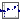
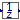
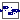
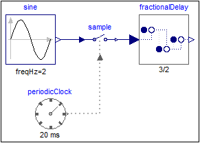
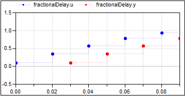

This package contains blocks that can be utilized for periodic and non-periodic clocks. These blocks usually utilize the duration of the last interval for the computation of the output signal. For example, the coefficients of the PI block are computed from the coefficients of a continuous-time PI block and from the duration of the last interval.
Extends from Modelica.Icons.Package (Icon for standard packages).
| Name | Description |
|---|---|
|  PI | Discrete-time PI controller with clocked input and output signals (for periodic and aperiodic systems using the parameterization of the continuous PI controller) |
|  UnitDelay | Delays the clocked input signal for one sample period |
|  FractionalDelay | Delays the clocked input signal for a fractional multiple of the sample period |
Discrete-time PI controller that has been derived from the continuous-time PI controller
1
y = k * (1 + ---) * u
T*s
T*s + 1
= k * ------- * u
T*s
by using the implicit Euler discretization formula. The block is parametrized with the gain k and the time constant T of the continuous PI block. As a result, the discrete-time form of the PI controller depends explicitly on the sample time of the controller and changing this sample time, will give still a similar performance.
Extends from Modelica_Synchronous.RealSignals.Interfaces.PartialClockedSISO (Block with clocked single input and clocked single output Real signals).
| Name | Description |
|---|---|
| k | Gain of continuous PI controller |
| T | Time constant of continuous PI controller |
| Name | Description |
|---|---|
| u | Connector of clocked, Real input signal |
| y | Connector of clocked, Real output signal |
This block describes a unit delay:
// Time domain description
y(ti) = previous(u(ti))
// Discrete transfer function
1
y(z) = --- * u(z)
z
that is, the output signal y is the input signal u at the previous clock tick. At the first clock tick, the output y is set to parameter y_start.
Extends from Modelica_Synchronous.RealSignals.Interfaces.PartialClockedSISO (Block with clocked single input and clocked single output Real signals).
| Name | Description |
|---|---|
| y_start | Value of output signal at first clock tick |
| Name | Description |
|---|---|
| y | Connector of clocked, Real output signal |
This block delays a signal. Similar to the ShiftSample block the first activation of the clock of the output y is delayed by shiftCounter/resolution*interval(u) relative to the input u (interval(u) is the sample period of the clock associated to input u). However, in contrast to ShiftSample, the block provides a buffer for the input values and truly delays the input signal.
The following
example
shows how a sample sine signal is delayed.
|  |  | |
| model | simulation result |
The parameter values shiftCounter=3 and resolution=2 are visible at the bottom of the fractionalDelay block.
Extends from Modelica_Synchronous.RealSignals.Interfaces.PartialClockedSISO (Block with clocked single input and clocked single output Real signals).
| Name | Description |
|---|---|
| shift | Delay = interval() * shift/resolution |
| resolution | Time quantization resolution of sample interval |
| Name | Description |
|---|---|
| u | Connector of clocked, Real input signal |
| y | Connector of clocked, Real output signal |